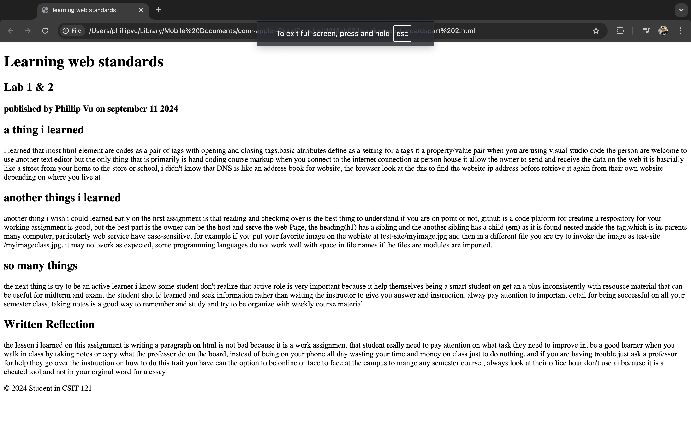
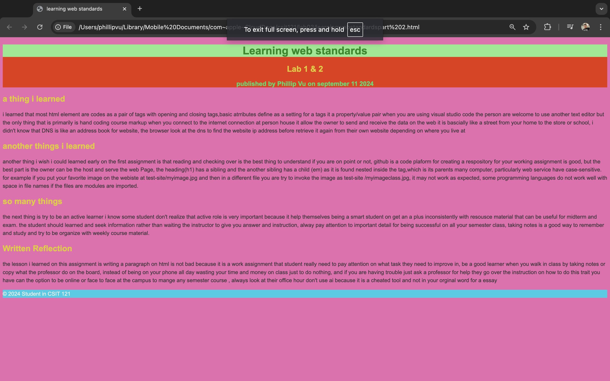
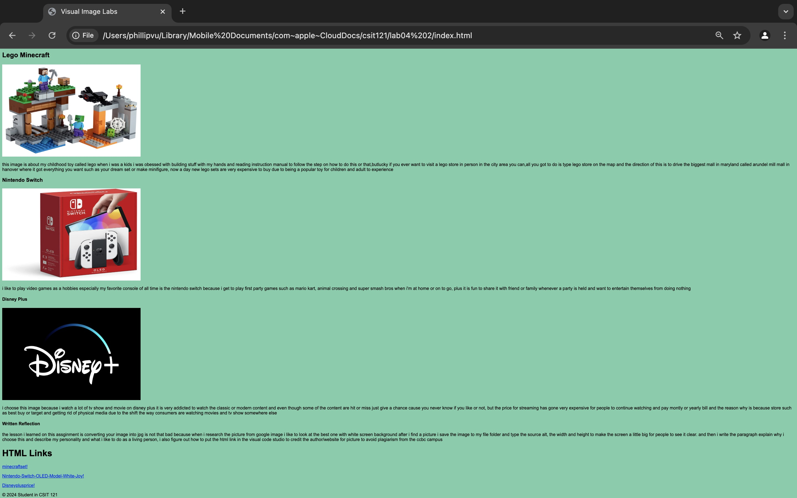
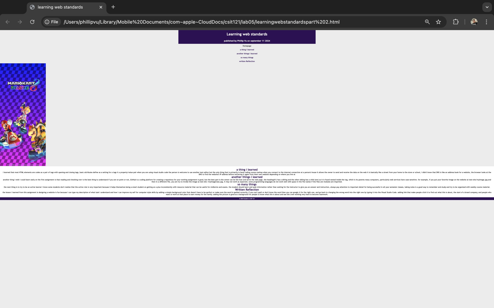
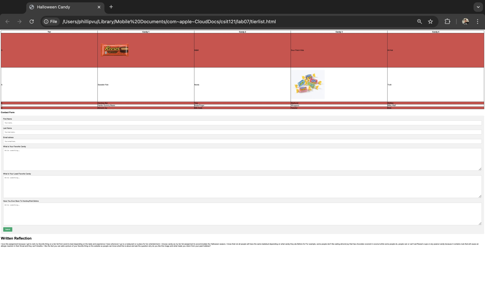
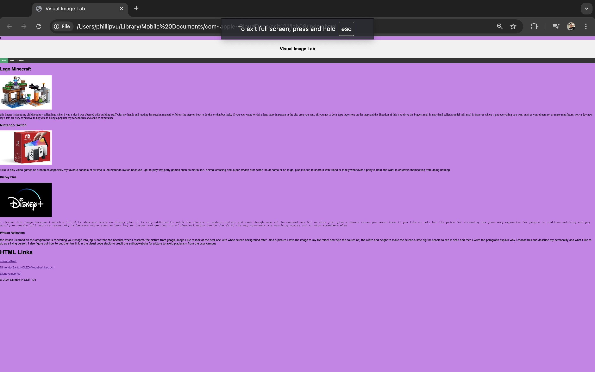
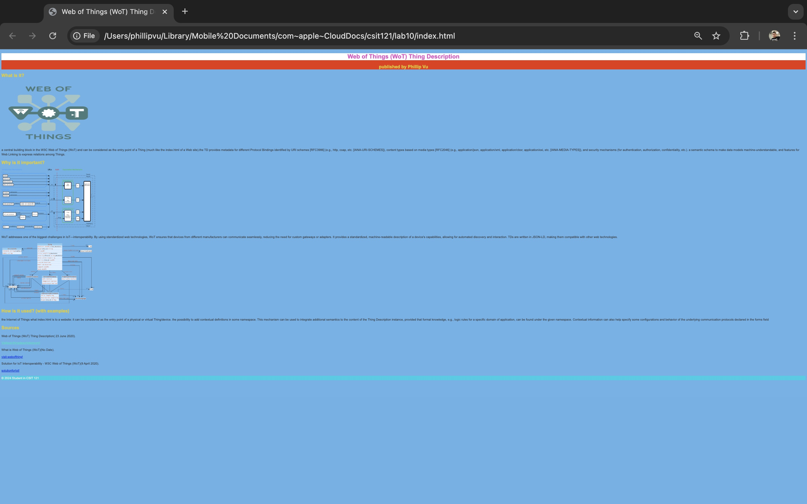

lab 01
on the first week of class i kinda mess the first assignment becuase i thought i have to submiit the work seperatly but i misunderstood, i have to drag the folder in the github so unfortunely i don't have a image to show
lab 02
this assignment is about what i learn and what i can do to improve things such as most html element are codes as a pair of tags with opening and closing tags ,basic atributes define as a setting for a tags it a property/value pair an active learner i know some student don't realize that active role is very important because it help themselves being a smart student on get an a plus inconsistently with resousce material that can be useful for midterm and exam. the student should learned and seek information rather than waiting the instructor to give you answer and instruction
lab 03
this asignment is the same just like the 1st one but i add the right equal percent of the light and dark background-color and the front need to be pretty and different but i don't want it to be the same
Lab 04
this asignment is about what is my favorite things to do as an hobbies and i did really good on the image with the width and adjusting the size to make it perfect and i also give credit to the resource link to avoid palgarism
lab 05
this asignment is about add 5 more html table add a random picture and the written reflection is different because it about typing the description of what task I understand and how I can improve my self for computer style skills by adding a simple background color that doesn't have to be perfect or make sure the word is spelled correctly,
lab 06

this assignment is about the url website the task is to pick your favorite website to view, what is the site audience, what is the crap alignment is, and is the audit score is good or bad website to handle the software
Lab 07
this tier list is about my favorite and least favorite halloween candy i ate before and it Was my favorite module because your just putting item on a tier list based on personaliy and at the end i ask you a question on what is your favorite type of candy and have you ever been to an amusement park
Lab 08
this assignment is the same thing but i add 3 table on home, content and about button to take you on the page and add a light color to see the dark front
Lab 09
this assignment was a failed to do because i try downloading the xtml extenstion and i was very confused to figure out i was orginaly going to visit my professor to have a better understanding on this task but she was not here on monday unfortunely i took the l
Lab 10
the asisgnment was about picking a wot Desciption and talk about what does it do, what this is about and why it is important to understand addresses one of the biggest challenges in IoT—interoperability. By using standardized web technologies, WoT ensures that devices from different manufacturers can communicate seamlessly, reducing the need for custom gateways or adapters. it can be considered as the entry point of a physical or virtual Thing/device. the possibility to add contextual definitions in some namespace. This mechanism can be used to integrate additional semantics to the content of the Thing Description instance, provided that formal knowledge, e.g., logic rules for a specific domain of application, can be found under the given namespace.
Written Reflection
what i learned for csit 121 class is improve things such as most html element are codes as a pair of tags with opening and closing tags ,basic atributes define as a setting for a tags it a property/value pair an active learner i know some student don't realize that active role is very important because it help themselves being a smart student on get an a plus inconsistently with resousce material that can be useful for midterm and exam. the student should learned and seek information rather than waiting the instructor to give you answer and instruction, putting item on a tier list based on personaliy and at the end i ask you a question on what is your favorite type of candy and have you ever been to an amusement park , the right equal percent of the light and dark background-color and the front need to be pretty